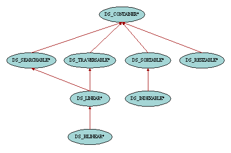

| General Abstractions |

The Gobo Eiffel Structure Library follows the classical design pattern whereby deferred classes introduce abstract properties, which leaves room for expansion by inheriting from these deferred classes to implement yet unavailable containers. The container cluster contains classes describing general abstract notions such as traversable, resizable or sortable properties.
All data structures are descendant of class DS_CONTAINER. The classes are generic, the generic parameter representing the type of the items being held in the containers. DS_CONTAINER provides expected queries such as count, the number of items in the container, and is_empty, checking whether there is any item held in the container. Also available is feature wipe_out, which empties the container putting it back to a state similar to what it was just after its creation.
The most direct descendant classes of DS_CONTAINER introduce some abstract properties of containers.
Some containers can provide facilities to find out whether a given item is held in this container. The class DS_SEARCHABLE introduces two features for this purpose: has is a boolean query which returns true if the object given as argument is actually held in the container, and occurrences is the number of times an object appears in that container.
Depending on the context, several different criteria might be used to search items in a container. For example, one may want to check whether a given object appears in a list (using Eiffel's '=' comparison criterion) or whether a similar object is included (using the redefinable feature is_equal from class ANY as equality criterion). In order to achieve this flexibility, the class DS_SEARCHABLE can be configured with an instance of class DS_EQUALITY_TESTER which provides a comparison criterion to the container. This comparison criterion is held in the attribute equality_tester and can be changed with set_equality_tester. When no equality_tester has been specified, the Eiffel's '=' comparison criterion is used. By default, DS_EQUALITY_TESTER is implemented using feature equal from class ANY, but descendant classes can be easily written to provide user-defined comparison criteria.
The comparison criterion of the container is not only taken into account by the features has and occurrences but also by the features search_forth and search_back provided by the cursor classes of the traversal mechanism.
Some containers can provide facilities in order to inspect their items one after another. This traversal mechanism is quite complex since there are different schools of thought for the design and implementation of such pattern and hence deserves a chapter of its own in this documentation.
Some containers such as priority queues or binary search trees keep their items sorted. On the other hand some other containers do not necessarily keep their items sorted but provide facilities to sort them on demand according to various comparison criteria and sorting algorithms. These latter containers inherit from the class DS_SORTABLE. As just said, this facility depends on various criteria such as sorting algorithms and here again deserves a chapter of its own in this documentation.
Some containers provide an index-based access to their items, like access to the characters of a STRING or to the elements of an ARRAY. Such containers inherit from the class DS_INDEXABLE whose items are indexed from 1 to count. The basic feature of this class is of course the access routine item (by analogy to class ARRAY and other classes from EiffelBase, feature infix "@" has been added as a synomym of item.), but it is also equipped with commands to add and remove items at given index positions, such as put or remove. There are also convenience features to access the first (at index 1) and last (at index count) items of the container, such as first, put_last or remove_first. Have a look at the flat-short form for a complete list of these features.
Some containers allocate chunks of memory to hold their items. This is for example the case for containers internally implemented with arrays (typically named DS_ARRAYED_*). Such data structures cannot contain more items than initially planned when allocating the chunk of memory unless they are resized from time to time. The class DS_RESIZABLE provides such facility. Apart from the expected feature resize, there are also two queries which are the counterpart of count and is_empty from DS_CONTAINER: capacity is the maximum number of items that the container can currently hold, and is_full checks whether the number of items in the container has reached this limit.
|
Copyright © 1999-2005, Eric
Bezault mailto:ericb@gobosoft.com http://www.gobosoft.com Last Updated: 12 February 2005 |